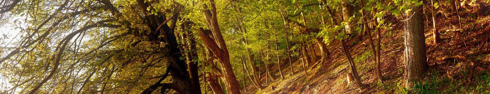

Altera sententia est, quae definit amicitiam paribus officiis ac voluntatibus. Hoc quidem est nimis exigue et exiliter ad calculos vocare amicitiam, ut par sit ratio acceptorum et datorum. Divitior mihi et affluentior videtur esse vera amicitia nec observare restricte, ne plus reddat quam acceperit; neque enim verendum est, ne quid excidat, aut ne quid in terram defluat, aut ne plus aequo quid in amicitiam congeratur.
Horum adventum praedocti speculationibus fidis rectores militum tessera data sollemni armatos omnes celeri eduxere procursu et agiliter praeterito Calycadni fluminis ponte, cuius undarum magnitudo murorum adluit turres, in speciem locavere pugnandi. neque tamen exiluit quisquam nec permissus est congredi. formidabatur enim flagrans vesania manus et superior numero et ruitura sine respectu salutis in ferrum.
Quibus occurrere bene pertinax miles explicatis ordinibus parans hastisque feriens scuta qui habitus iram pugnantium concitat et dolorem proximos iam gestu terrebat sed eum in certamen alacriter consurgentem revocavere ductores rati intempestivum anceps subire certamen cum haut longe muri distarent, quorum tutela securitas poterat in solido locari cunctorum.
Horum adventum praedocti speculationibus fidis rectores militum tessera data sollemni armatos omnes celeri eduxere procursu et agiliter praeterito Calycadni fluminis ponte, cuius undarum magnitudo murorum adluit turres, in speciem locavere pugnandi. neque tamen exiluit quisquam nec permissus est congredi. formidabatur enim flagrans vesania manus et superior numero et ruitura sine respectu salutis in ferrum.
Quibus occurrere bene pertinax miles explicatis ordinibus parans hastisque feriens scuta qui habitus iram pugnantium concitat et dolorem proximos iam gestu terrebat sed eum in certamen alacriter consurgentem revocavere ductores rati intempestivum anceps subire certamen cum haut longe muri distarent, quorum tutela securitas poterat in solido locari cunctorum.